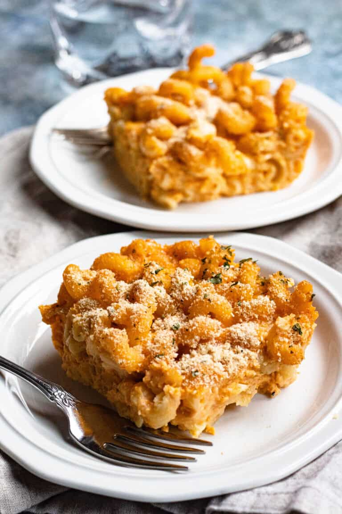

Macaroni Pie

Description
This Macaroni Pie from Barbados is the ultimate comfort food. Barbados has made macaroni and cheese their own by adding evaporated milk, ketchup, and honey mustard to the dish. This baked casserole is creamy, savory, and slightly sweet, with a perfectly crunchy breadcrumb topping.
Ingredients
- Macaroni shells
- Onion Powder
- Evaporated Milk
- Shredded Cheddar Cheese
- Honey Mustard
- Breadcrumbs
- Ketchup
- Salt and Pepper
Steps
- Preheat oven to 350 degrees
- Boil water and cook the noodles according to the package until they are al dente. Drain the noodles.
- In the pot, add the evaporated milk over medium-high heat and whisk until it comes to a boil. Turn off the heat, then add the cheddar cheese and whisk until it melts fully into the milk. Then add the rest of the ingredients except for the noodles and breadcrumbs. Mix to combine again.
- Finally, add the macaroni into the cheese sauce, and mix so that the noodles are fully coated.
- Grease a 9 by 9 pan and put the macaroni and cheese into the dish. Top with bread crumbs.
- Bake the macaroni for about 35-40 minutes until heated all the way through and the breadcrumbs are slightly browned. Enjoy!